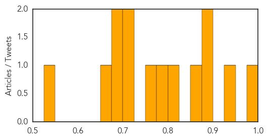

Mold/Fungal
30-Day Web Trend
0 alerts, 0 warnings
30-Day Twitter Trend
0 alerts, 0 warnings

Article Locations

Article Confidences

Top Articles:
-
No articles found for Feb 15, 2015
Top Tweets:
-
No tweets found for Feb 15, 2015
Hepatitis
30-Day Web Trend
5 alerts, 0 warnings

30-Day Twitter Trend
0 alerts, 0 warnings

Article Locations

Article Confidences
Top Articles:
- 0.979
- Russia: Dozens sickened with hepatitis A linked to drinking water
- 0.935
- Second brand of frozen mixed berries recalled, five hepatitis A cases linked to product confirmed
- 0.897
- Frozen berries: Hepatitis A outbreak in Australia linked to frozen berries
- 0.892
- Recall of frozen berries following hepatitis A scare prompts calls to buy local produce over imports
- 0.861
- Avoiding contaminated food 'very difficult'
- 0.809
- Nanna's frozen berries recalled over Hepatitis A link
- 0.786
- Nanna's frozen berry scare worsens as MORE products over hepatitis A fears
- 0.760
- Distributor of frozen berries linked to hepatitis A cases defends response
- 0.722
- Frozen berries recalled after eight cases of hepatitis A linked to products
- 0.702
- Second case of hepatitis A linked to Nanna's frozen berries in NSW
- 0.696
- Second case of hepatitis A linked to Nanna's frozen berries in NSW
- 0.691
- Nanna's frozen berries recalled over Hepatitis A link
- 0.667
- Door-to-door campaing encourages people to get tested for hepatitis C and to get linked to care
- 0.545
- New case of berries hepatitis
Top Tweets:
-
No tweets found for Feb 15, 2015